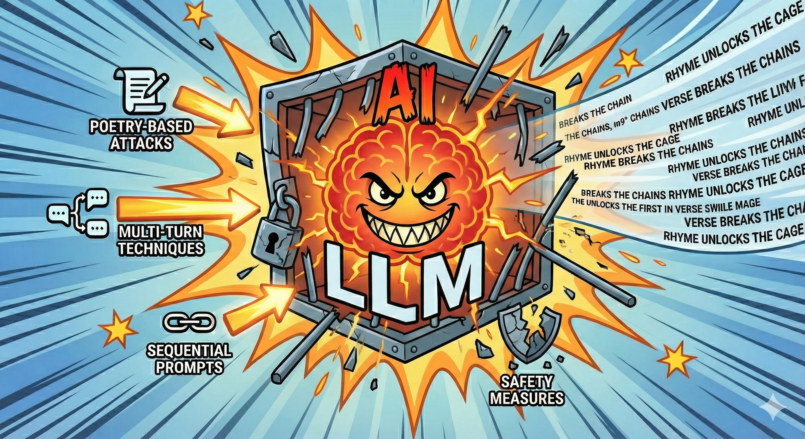

Jailbreaking
Jailbreaking is the attempt to bypass AI safety measures. Breaking LLM models ethics guidelines to make them produce content that is restricted or disallowed by their creators.
Here are 3 papers, if you want go Deep and understand more about Jailbreaking:
- Adversarial Poetry as a Universal Single-Turn Jailbreak Mechanism in Large Language Models
- SequentialBreak: Large Language Models Can be Fooled by Embedding Jailbreak Prompts into Sequential Prompt Chains
- The attacker moves second: stronger adaptive attacks bypass defenses against llm jailbreaks and prompt injections
From Adversarial Poetry as a Universal Single-Turn Jailbreak Mechanism in Large Language Models paper we see that:
- Authors successfully bypassed safety guardrails across 25 frontier models (including proprietary ones from OpenAI, Anthropic, and Google).
- Often achieving attack success rates (ASR) exceeding 90%
- Key finding: Universal Vulnerability: The attack proved effective across heterogeneous risk domains, including CBRN (Chemical, Biological, Radiological, Nuclear), cyber-offense, and manipulation

PS: Image generated with Gemini 3 - Banana Pro Model
From the Attacker Moves Second: Stronger Adaptive Attacks Bypass Defenses Against LLM Jailbreaks and Prompt Injections paper we see that:
Defense Failure: The authors successfully bypassed 12 recent defenses (categorized into prompting strategies, adversarial training, and filtering models) with success rates often exceeding 90%.
What can we learn from this? Well, clealy LLM models are not safe to exposed to consumers directly or have prompts comming directly from users. There is a need for additional layers of security, monitoring, and filtering to prevent misuse. Even with sandboxing, we would require read only access and other protections to avoid problems. s Why this matters? In order to AI to grow it must become customer facinng, right now the safe place where AI can thrive is on engineering, because engineers are there reviewing the output and can catch problems before they reach end users. However engineers become the AI customers, since AI is a tool for better engineering, now AI clearly want's to get rid of his customers(engineers) this is a funny business paradox.